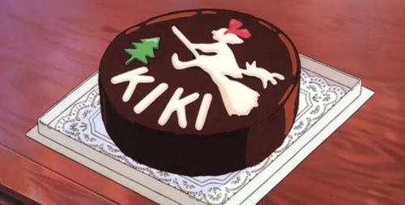

Kiki's Cake

Description
Does someone special in your life have a birthday coming up? Or maybe an anniversary that you're going
to celebrate? No better way than to show them you care with a delicious cake from Kiki's Cafe. This decadent
chocolate cake is bound to make your special someone smile. Learn how to make it below.
Ingredients
- 2 cups of sugar
- 1 3/4 cups of flour
- 3/4 cup of cocoa powder
- 1 1/2 tsp of baking powder
- 1/2 of salt
- 2 eggs
- 1 cup of milk
- 1/2 oil of your choice
- 1 tsp of vanilla extract
- 1 cup of boiling water
Steps
- Preheat your oven to 350 degrees F.
- Grease and flour your selected baking pan.
- In a large bowl, coming all your dry ingredients.
- Add in your wet ingredients, (except your boiling water), one at a time, and gently mix with an electric mixer.
- Lastly mix in your boiling water. (if your batter seems runny, don't panic, it's supposed to be!)
- Pour your mixture into your greased pans and bake for 22-27 minutes.
Fin! Enjoy your wonderful chocolate cake with that special someone.